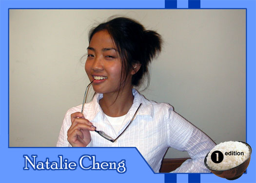

|
Why did you get involved with Theatre Rice? I got involved with Theatre Rice because I've always wanted to explore acting and theatre. I sort of wanted to do it in high school, but I never could because Drama always conveniently conflicted with my other classes. Also, I saw my first Theatre Rice show during my first semester here at Berkeley and had never laughed so hard or felt so happy while watching a show. Something about seeing Asian Americans onstage making Asian American jokes struck me. What do you hope to gain from TR? I hope to gain acting skills as well as people skills from TR. TR is the first organization that I joined here at Berkeley (besides the ubiquitous Hall Ass) and it's interesting to see how a group of strangers (except for returners) bond through theatre or just spending almost all of their time together. It's like playing with people and putting them in a situation that (hopefully) ends happily. What do you like to do in your spare time? In my spare time I like to watch films, be a music snob and read album reviews, sleep and dream, try new restaurants, cook, take pictures, read, cuddle with my cat (Jackson), and be a nerd and talk on AIM. What are your favorite films or t.v. shows? Films: Election, Batman Returns, City of God, American Beauty, The Sixth Sense, The King and I. TV shows: Simpsons, Smallville, SNL If you had a quote that defines how you live life, what would it be? The good thing about pessimism is that you're either always right or pleasantly surprised. |